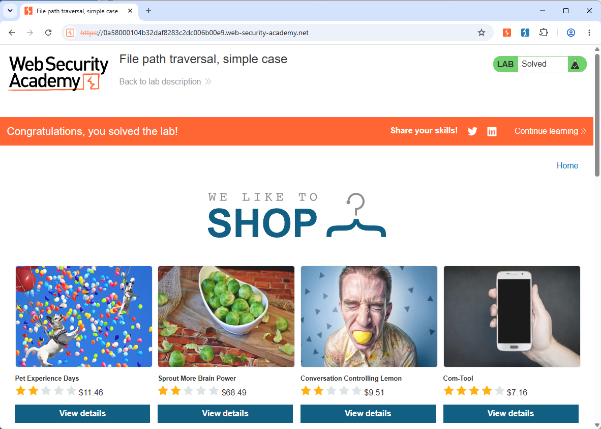

File path traversal, simple case
Tipo de explotación
Path Traversal al cargar una imagen del servidor.
Objetivo
Encontrar la vulnerabilidad Path Traversal de las rutas en la visualización de imágenes de productos.
Explicación técnica de la vulnerabilidad
Estas vulnerabilidades permiten a un atacante leer archivos arbitrarios en el servidor que ejecuta una aplicación. Esto podría incluir:
- Código y datos de la aplicación.
- Credenciales de sistemas de back-end.
- Archivos sensibles del sistema operativo.
En algunos casos, un atacante podría incluso escribir en archivos arbitrarios en el servidor, lo que les permitiría modificar datos o el comportamiento de la aplicación y, finalmente, tomar el control total del servidor.
Procedimiento paso a paso
- Abrir Burb Suite nos dirigimos a la pestaña Proxy.
- Activamos la opción Intercept on.
- Dar clic en Open browser y pegar en este la dirección del laboratorio y presionar la tecla enter.
- Regresar a Burb Suite y dar clic en Forward hasta que logremos ver la URL con el request de la imagen.
- Dar clic con botón izquierdo al Request y dar clic en Sent to Repeater.
- Dar clic en la pestaña Repeater.
- En el apartado Request logramos ver GET /image?filename=xxxx.jpg.
- Borramos el nombre de la imagen e introducimos el Payload: ../../../etc/passwd.
- Dar clic en Send, del lado derecho en Response podemos ver el contenido del archivo passwd.
- Con esto logramos resolver el laboratorio.



Explicación del payload
Al analizar los request de la página en el momento de cargar las imágenes nos damos cuenta en la url del request se encuentra /image?filename=15.jpg y llama al método GET para que filename tome el nombre de archivo y devuelva el contenido del archivo especificado.
Generalmente los archivos de imagen se almacenan en el disco en la ubicación /var/www/images/. Para devolver una imagen, la aplicación añade el nombre de archivo solicitado a este directorio base y usa una API del sistema de archivos para leer el contenido del archivo. En otras palabras, la aplicación lee desde la siguiente ruta de archivo: /var/www/images/15.jpg
Esta aplicación no implementa defensas contra ataques de path travel. Como resultado, un atacante puede solicitar la siguiente URL para obtener el archivo /etc/passwd del sistema de archivos del servidor con el siguiente payload: ../../../etc/passwd.
La secuencia ../ es válida dentro de una ruta de archivo, y significa subir un nivel en la estructura de directorios. Las tres secuencias consecutivas ../ suben desde /var/www/images/ hasta la raíz del sistema de archivos, por lo que el archivo que se lee realmente es: /etc/passwd.
Mitigación recomendada
La forma más efectiva de prevenir Path Traversal es evitar pasar datos proporcionados por el usuario a las APIs del sistema de archivos por completo. Muchas funciones de la aplicación que hacen esto se pueden reescribir para ofrecer el mismo comportamiento de manera más segura.
Si no puedes evitar pasar datos del usuario a las APIs del sistema de archivos, recomendamos usar dos capas de defensa para prevenir ataques:
- Valida la entrada del usuario antes de procesarla. Idealmente, compara la entrada con una lista blanca de valores permitidos. Si eso no es posible, verifica que la entrada contenga solo contenido permitido, como caracteres alfanuméricos.
- Después de validar la entrada proporcionada, añade la entrada al directorio base y usa una API del sistema de archivos de la plataforma para canonizar la ruta. Verifica que la ruta canonizada comience con el directorio base esperado.